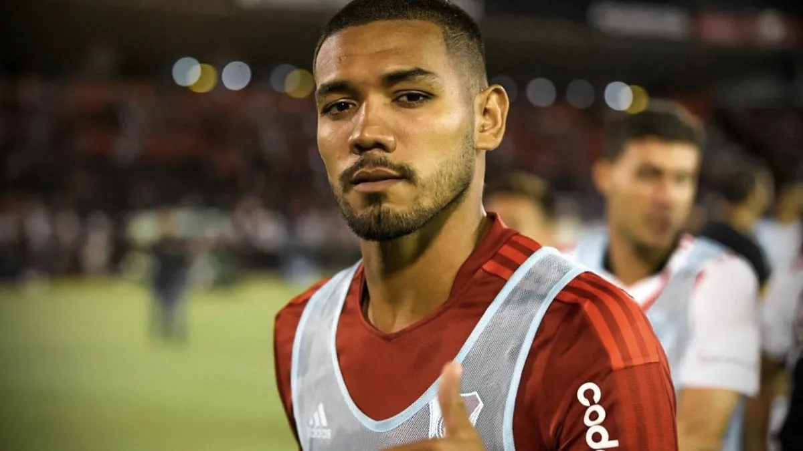
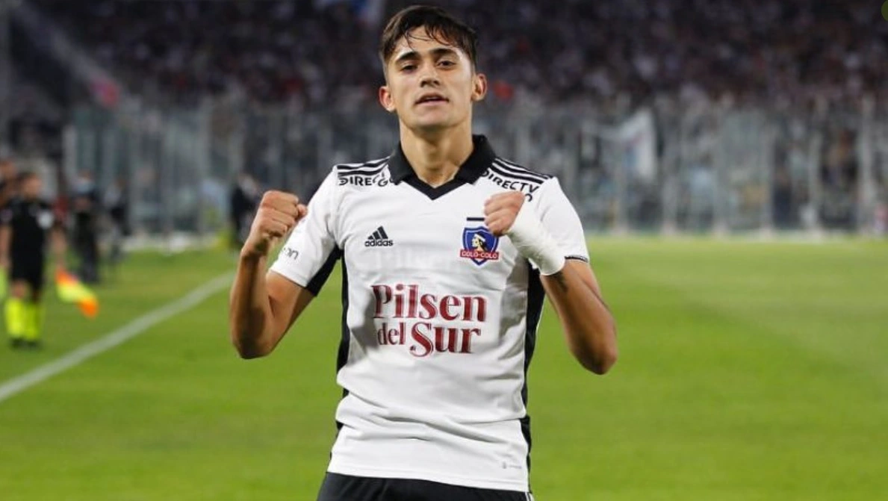
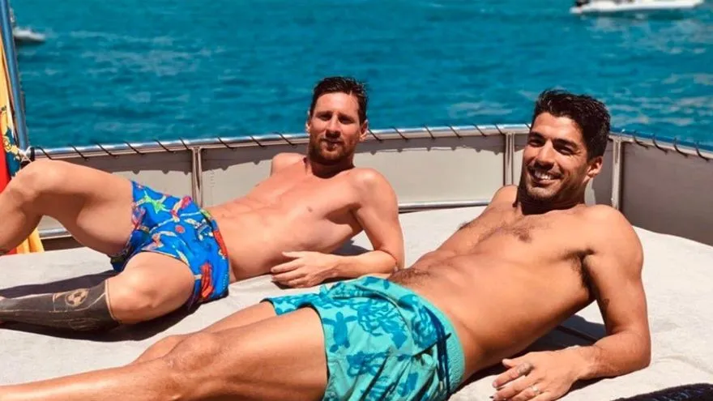

¿MARTÍNEZ AL SEVILLA?

El defensor central, en la mira por sus bajos rendimientos desde que sufrió una lesión muscular, sigue siendo codiciado por varios clubes europeos. Su juventud, su capacidad para salir con pelota dominada y su roce internacional (juega para la selección de Paragüay) llamó la atención en esta oportunidad del Sevilla. El club español se desprenderá de su zaguero francés Koundé y está buscando opciones en el mercado. River estaría dispuesto a desprenderse del jugador por no menos de 8 millones de euros. Por ahora, solo un sondeo.
PABLO CÉSAR SOLARI, NUEVO REFUERZO MILLONARIO

River llegó a un acuerdo y sumó a tercer refuerzo: Pablo César Solari será presentado en las próximas horas. El extremo de 21 años firmará por 4 años a cambio de 5 millones de dólares por el 60% del pase. El jugador, fanático de River como toda su familia, viene de ser la figura de Colo Colo y enfrentó al Millonario en la fase de grupos de la última Copa Libertadores. El jugador descartó ofertas de México y Brasil para cumplir su sueño de niño. ¡Bienvenido Pablo!
SUÁREZ SIGUE DE VACACIONES MIENTRAS RIVER ESPERA

A horas de jugarse la clasificación a los Cuartos
de final de la Copa Libertadores, Luis Suárez continúa con sus relajantes
vacaciones en España. En compañia de su familia y de Lio Messi, el uruguayo
tendría la decisión de tomar de venir al Millonario con la condición
de que el equipo acceda a una nueva fase del torneo continental más importante
de Sudamérica. Por eso, el partido de esta noche ante Vélez no sólo podría
significar el avance en la competición, sino la ratificación de que uno
de los mejores jugadores del mundo vestirá el Manto Sagrado
BORJA: AL FIN LLEGÓ

Después de tantas idas y venidas, de la intromisión de Palmerias
(dueño del 50% de la ficha del jugador), luego las restricciones del gobierno argentino en cuanto a la politica monetaria y que parecía que el pase no se hacía, Miguel Ángel Borja es el nuevo 9 de Gallardo. El colombiano admitió que presionó tanto a Junior como a Palmeiras para poder vestir el manto sagrado. La sensación es que con el bajo nivel de Brian Romero y la salida de Julián Álvarez al Manchester City, "el Colibrí" no tendrá mucha demora en saltar a la cancha. La idea es que debute ante Gimnasia el jueves 21 por la novena fecha de la Superliga.